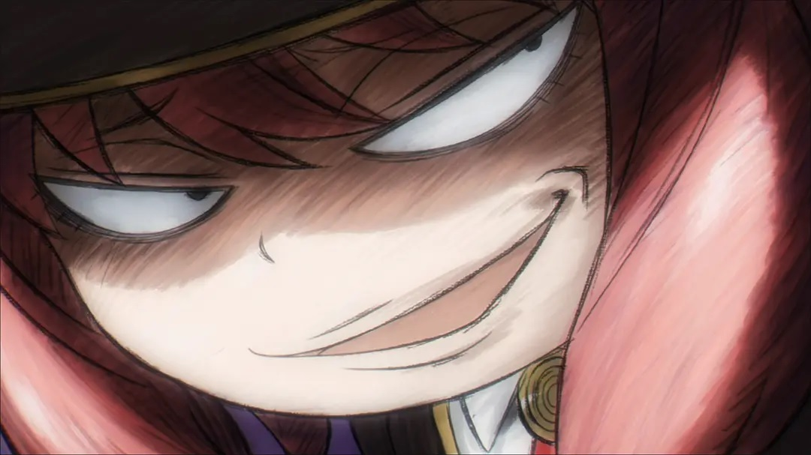
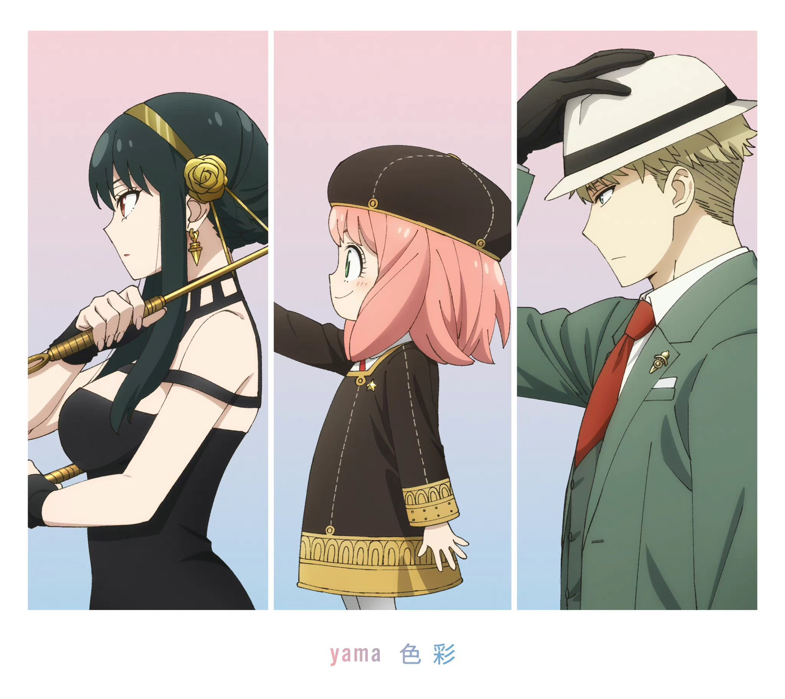

|  | 人物简介 | 剧情简介 | 作者介绍 | 大众评价 | 返回主页 |
剧情简介 《间谍过家家》是一部由远藤达哉创作的漫画，后被改编为电视动画。故事背景设定在一个冷战时期的世界，讲述了西国间谍黄昏为了完成任务，组建了一个虚假的家庭，并在这个过程中经历了一系列有趣和充满挑战的故事。 黄昏是西国情报局的一名间谍，代号“黄昏”。为了调查威胁东西两国和平的东国国家统一党总裁多诺万·德斯蒙，他接受了“枭”作战任务，任务要求他在一周内组建一个家庭，并将养女送入德斯蒙儿子就读的名校。黄昏选择了能够读懂他人内心的超能力者阿尼亚作为养女，并找到了暗杀者约尔作为妻子，三人组成了一个看似普通的家庭。 在这个家庭中，黄昏、阿尼亚和约尔各自隐藏了自己的真实身份。黄昏是一名精神科医生，阿尼亚是一名超能力者，而约尔则是一名暗杀者。他们在日常生活中不仅要应对各自的任务和挑战，还要处理来自学校、社会以及敌对势力的各种麻烦和危机。随着故事的展开，他们之间的感情也逐渐加深，尽管他们的身份秘密面临暴露的风险，但他们依然努力维持着这个虚假的家庭。 |